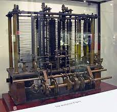
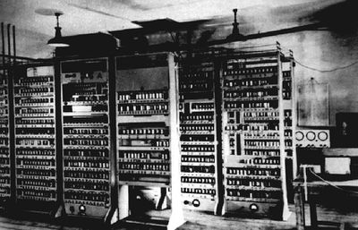
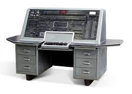

Історія розвитку комп'ютерів та програмування
Історія створення та розвиток комп'ютера
Механічні обчислювальні пристрої
XVII-XIX століття: Різні винаходи, такі як рахівники та механічні обчислювальні машини, допомагали вирішувати обчислювальні задачі.
Аналітичний двигун Чарльза Беббіджа (1837-1871)
1837: Англійський математик та винахідник Чарльз Беббідж розробив концепцію аналітичного двигуна, прототипа загального призначення, який у кінці кінців став відомий як перший комп'ютер.
Алан Тьюрінг та електромеханічні комп'ютери (1936-1940)
1936: Алан Тьюрінг формалізував поняття універсального машинного коду та запропонував теорію обчислень. Це був важливий крок у розвитку ідей про комп'ютери.
1930-1940: Розробка електромеханічних комп'ютерів, таких як Z3 (Конрад Цузе, 1941), стала можливою завдяки використанню електричних компонентів.
Електронні комп'ютери та ENIAC (1940-1950)
1946: ENIAC (Electronic Numerical Integrator and Computer) вважається першим електронним комп'ютером. Він вагав понад 27 тонн та був призначений для вирішення складних обчислювальних задач.
Комп'ютери зі зберіганням програм (1950-1960):
Розвиток комп'ютерів, які використовували системи зберігання програм, такі як UNIVAC I та IBM 701, дозволив використовувати комп'ютери для різних завдань, а не лише для конкретної задачі.
Мікропроцесори та особисті комп'ютери (1970-1980)
З'явлення мікропроцесорів в 1970-х роках дало змогу створювати комп'ютери в невеликих розмірах та знизило їхню вартість. Це призвело до розквіту особистих комп'ютерів, таких як Apple II та IBM PC.
Інтернет та розповсюдження персональних комп'ютерів (1980-1990)
Поширення комп'ютерів серед населення та створення Інтернету відкрило нові можливості для обміну інформацією та спілкування.
Мережі та технології (1990-сьогодні)
Зростання обчислювальної потужності, розвиток мереж і хмарних технологій, а також поширення мобільних пристроїв сприяють нинішньому етапу розвитку комп'ютерів.